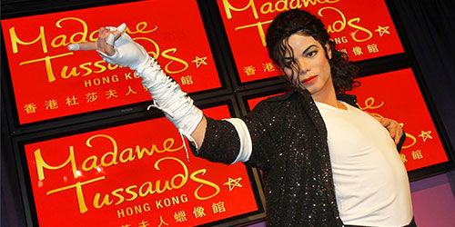

Whats New
By 1835 Marie had settled down in Baker Street, London, and opened a museum.[7] This part of the exhibition included victims of the French Revolution and newly created figures of murderers and other criminals. The name is often credited to a contributor to Punch in 1845, but Marie appears to have originated it herself, using it in advertising as early as 1843.[8] Other famous people were added to the exhibition, including Horatio Nelson, and Sir Walter Scott. Some of the sculptures done by Marie Tussaud herself still exist. The gallery originally contained some 400 different figures, but fire damage in 1925, coupled with German bombs in 1941, has rendered most of these older models defunct. The casts themselves have survived (allowing the historical waxworks to be remade), and these can be seen in the museum's history exhibit. The oldest figure on display is that of Madame du Barry. Other faces from the time of Tussaud include Robespierre and George III. In 1842, she made a self portrait which is now on display at the entrance of her museum. She died in her sleep on 15 April 1850. 